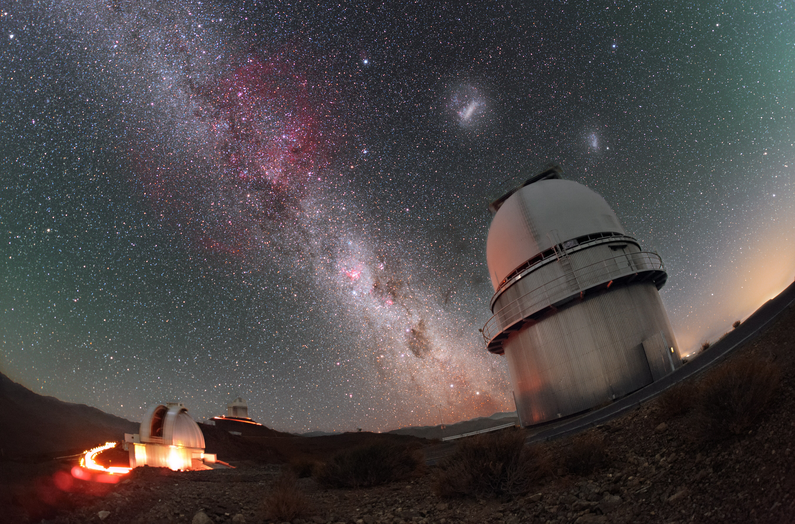

大小麦哲伦星系：文化失忆中的星云

Credit: Magellanic Clouds above the Danish 1 54-metre telescope. P. Horálek/ESO, CC BY 4.0.
Wikimedia Commons
大小麦哲伦星系是银河系的两个伴星系，位于地球南半球夜空，距离我们约 16 万与 20 万光年，是人类肉眼可见的最遥远天体。它们在晴朗夜晚以乳白色云斑的形式出现，不依赖任何仪器即可观察。尽管如此，它们却在主流文化记忆中长期缺席。
我们熟悉的星空叙述主要来自北半球：猎户、北斗、织女、天蝎……这些星座构成了全球教材、文艺与天文学的基础框架。而麦哲伦星系，即便对南半球原住民社会长期可见，也未获得与之相称的文化地位。它们在科学分类中被边缘，在神话系统中未被纳入，在大众知识中几近消失。
命名与遮蔽

Credit: The Magellanic Clouds. J. C. Muñoz/ESO, CC BY 4.0.
Wikimedia Commons
麦哲伦星系的现代名称源自 1519 年麦哲伦的航行记录。自此，它们被纳入西方天文学命名系统。但在此之前，这两个星系早已在南半球原住民文化中扮演角色。
.jpg){kind=link}
澳大利亚 Yolngu 族称其为天鸟，象征灵魂迁徙；Wiradjuri 人称其为祖灵之火；马普切人视其为灵界入口；波利尼西亚文化中，它们是夜航的固定参照点。这些解释虽异，其功能却一致：它们不只是远方天体，而是与祖先、方向、秩序等核心观念相关的社会工具。
但这些本地命名与知识体系未被继承。在殖民扩张与学科标准化过程中，它们失去表达渠道，转而被一个外来命名所覆盖。
解释的单向性
随着近代天文学的建立，星空被重新命名、测量、建模。科学解释系统提供了极高的可预测性与普适性，但同时也排除了其它认知传统。口述宇宙观因缺乏文字与规范表达，被认为是“非知识”或“前科学”，逐步被移出公共教育、媒体与地图。
这一过程不是“进化”，而是解释权的重构。在现代科学主导下，天文知识被归入公式与模型，象征解释被归入迷信与幻想，麦哲伦星系失去了社会意义，仅留下物理属性。
它们既不属于北半球神话星座，也不构成主流天文视觉文化的一部分。尽管其形状、亮度与位置独特，它们仍被排除在星座系统与文化传播之外。
在人类诞生之初，我们是否就已凝视它？
这不是浪漫设问，而是一个可由地理与认知视角切入的问题。
非洲南部是麦哲伦星系全年可见的区域，同时也是现代人类起源地。认知科学已表明，图形识别与象征结构早于语言、农业与定居生活。若早期智人曾注视这些云斑，它们极可能被记忆、赋义、用于方向判断乃至神话萌芽。
随着人类迁徙至澳洲、南美与太平洋岛屿，不同族群面对相同天象输入，容易生成结构性相似的象征反应。我们观察到，南半球多地原住民将这两团星云解释为“火”“鸟”“祖先”“通道”“灯塔”等意义结构。它们的语言与神话体系各自独立，但象征逻辑高度重合。
这不是共享神话的传播，也不是荣格式的集体潜意识，而是“平行演化”：不同文化系统对同一自然现象在长期经验刺激下形成的相似符号响应。
重新解释的可能性
今天，我们知道麦哲伦星系包含数十亿恒星，正经历与银河系的潮汐作用，有恒星形成区和气体桥，是构造复杂的不规则矮星系。但这些知识并未取代它在人类文化中的空白。
在部分南半球国家，如澳大利亚和智利，当地学校和文化组织开始将原住民关于星云的传统解释纳入课程和公共教育中。在天文艺术、虚拟现实与非文字知识研究中，也逐渐有学者尝试复原这些天体在“经验宇宙”中的意义
这不是复兴原始信仰，而是试图恢复一个更广义的宇宙理解方式：科学解释可以精确结构，文化解释可以赋义定位。麦哲伦星系的重新“进入语言”，本质上是一种文化修复。
麦哲伦星系的光从十几万光年之外抵达地球，其轨迹未曾中断。但在人类的文化系统中，它们却遭遇了遗忘：不是消失，而是失去意义。
神话不是虚构，而是历史深处的感知框架。在文明形成之前，人类通过凝视星空建立方向、时间与群体经验。我们今日对这些星系的重新理解，既不应止步于模型之内，也不必重建旧神。重要的是恢复那种凝视本身——将星云重新纳入解释与生活的结构。